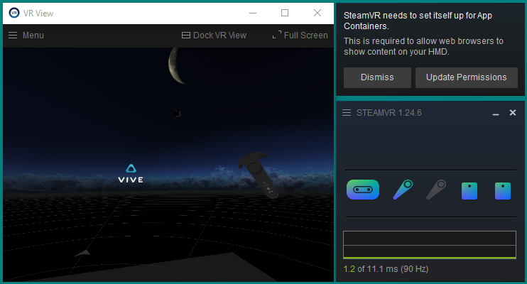
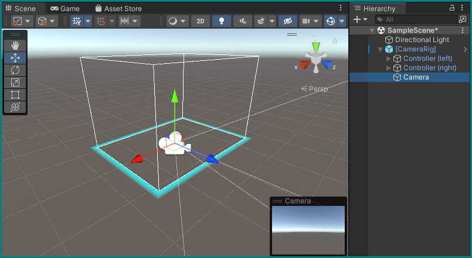
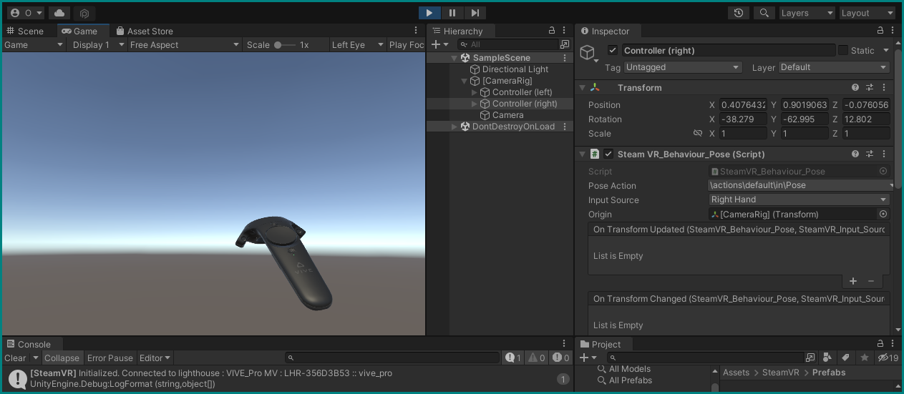
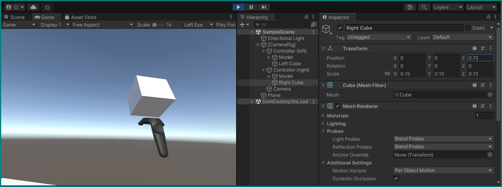
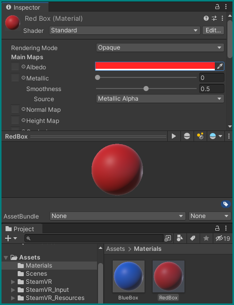
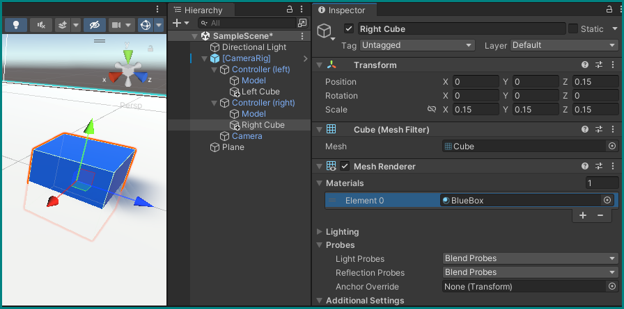
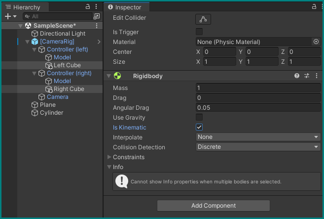

Interaction in VR
Let's now dig into actually using VR with Unity, starting with basic interactions!
Pre-flight inspection
For that we need to add some additional packages to Unity which will be specific to the hardware we're using for this tutorial — the HTC Vive Pro Eye, using SteamVR. You should verify the proper connection of the headset and the pairing of controllers by opening the Steam application and launching SteamVR. It may ask you to Update Permissions on first launch — do it by allowing the changes.
If everything works, you can see the empty VR space and your controller(s) if you put on the headset, and in an optional desktop view of the VR environment you can enable from the menu button in the SteamVR window:

A new project
Let's first of all create a new Unity 3D project with the hub, like before. You can close the one from the previous tutorial, we won't be needing it anymore. Set up the new project's window like we did for the first tutorial, or to your own liking.
Reusing the old project
You can also reuse your old project in this case, just delete both the new objects and assets you created by right-clicking them in the hierarchy and project browser, respectively, and selecting "delete." Or you can also keep them around, as long they're deactivated in the hierarchy — it's up to you how much clutter you can tolerate vs. how much time you want to save. It can be good to have a working reference around to compare.
Installing and importing Packages
In the Unity editor's menu bar, go to Window → Package Manager, which will open a new floating window. Selecting My Assets from the Packages drop-down menu at the top, type in steamvr in the search box and you should have the SteamVR Plugin appear — import it with the Import button below. A new window will present itself to let you select parts of the package, but we will just keep everything checked and hit Import again.
The Asset Store
If SteamVR can not be found anywhere in the Package Manager, it may not be added yet to this Unity account. In that case go to the Unity Asset store, find it there, and add it to "your assets."

During this, some dialog boxes may appear — just confirm what they want. SteamVR may ask to accept changes to the project's settings — Accept All and it will be very happy. You can close the package manager windows now.
Having the basics for VR installed with the SteamVR package, we now need an additional one for the eye tracker. You could download it from the developer's website, but we have already put it in a folder on your desktop.
To import a package (or an asset) that is not listed in the package manager, you need to go to Assets → Import Package → Custom Package… in the menu bar. Navigate to the packages folder in the workshop folder and locate Vive-SRanipal-Unity-Plugin.unitypackage under packages → SDK-v1.3.3.0 → SDK → 02_Unity. Confirm with Open and you'll be presented with the same interface as before to select only parts of it — again, keep all checked and Import.
Adding VR basics
Now that we have the necessary packages all imported, we can add the bare necessities to our scene for VR to function.
The Camera Rig
The SteamVR package includes everything we need to run VR in Unity, but to access the functionalities we need to add its assets to our scene/hierarchy. Specifically, we need the CameraRig Prefab, which contains pre-configured objects that will correspond with the VR headset and controllers.
Add it by finding the SteamVR folder in the Assets folder with the Project browser. Inside that, there's a folder called Prefabs, which contains all its… Prefabs, which are "GameObjects complete with all its components, property values, and child GameObjects as […] reusable Asset[s]."
Locate the [CameraRig] prefab, and simply drag it to an empty are in the hierarchy:
Being a prefab, it will appear blue in the hierarchy. Inside it you can find objects named Controller (left), Controller (right), and Camera if you expand it by clicking the arrow next to [CameraRig]. This new Camera object will be our main camera from now on, so you can delete the old, default Main Camera object from the hierarchy.

First VR run
You can already try running the game to see an empty Unity world in VR. The first time you do, a SteamVR window will appear and ask you to "open the SteamVR Input window" to generate "actions for SteamVR" — do it. Click through this and the next window with Yes, and hit Save and generate in the new SteamVR Input window that appears in Unity to generate the default inputs bindings for controls; you can close this window afterwards.
You may see some error messages in the console because these actions were missing — run the game again and they should be gone. The headset should be functioning and showing you an empty, sunny world!

Interacting with objects — Part 1
Nice as that may be, we want more. Let's add some objects to interact with.
Adding objects
Stop the game and start by adding a floor.
As before with the cube, right-click somewhere in the hierarchy, select 3D Object, and then find Plane. This will create a flat surface in the middle of our environment. Make sure it's at the origin (Position: X=0, Y=0, Z=0) and not rotated, and adjust its scale to X=0.5, Y=1, Z=0.5.
Add a cylinder the same way and place it at X=1.2, Y=0.55, Z=0.5 with a scale of 0.5, 0.5, 0.5.
Create a new cube and scale it to 0.15, 0.15, 0.15. Copy it by right-clicking on it and selecting Duplicate — the new one will automatically be named Cube (1), which you can keep or rename to your liking, e.g. Left Cube and Right Cube.
Tying objects to VR controllers
Now we want these two cubes to follow the movement of our VR controllers. The easiest way to do this is to simply drag them in the hierarchy to their respective controller objects in the CameraRig, making sure that they end up "inside" them:
Running the game now you should have a clumsy, white box surrounding the tips of your controllers, with a cylinder standing close by. If you want, you can adjust the transforms of each cube to offset them from the controllers: 0.15 on the Z-axis should look good enough.

Materials and colors
Let's spice this blank world up a bit by adding some color.
Create new folder inside the Assets in the project browser by right-clicking the Assets folder, then Create → Folder. Name it Materials.
Inside this folder, create two new Materials: Create → Material. Name them BlueBox and RedBox. Clicking on them you see their properties in the inspector — change the Albedo of BlueBox to a blue color, and that of RedBox to a red one by clicking on the white strip. You can see the changes in the preview sphere at the bottom of a material's inspector.

You can now assign these materials to the cubes by going to each cube's inspector, expanding the Materials property in its Mesh Renderer component, and either dragging a material there, or selecting one by clicking the target icon. Choose which cube should be red, and which blue, and make these changes.

Rigidbody Components
While you can now wave around with colorful boxes, there is not much else going on — the cylinder just stands there, oblivious to anything you do (try it, the cubes and controllers will just intersect it in a ghostly fashion). We can change that by giving the objects in our scene Rigidbody components, which will add physics and automatic collision detection to them.
In the hierarchy, select our smaller objects (the cylinder and both cubes) by holding CTRL and clicking on each. The inspector now shows properties that are shared for all objects, and allows you to add components in bulk.
Click Add Component with all three objects (and nothing else!) selected, and search for the Ridgidbody component.

We want our cubes to still only be controlled by being tied to our controllers and not be affected by gravity, so go to the hierarchy, deselect the cylinder and select only the two cubes. In their Rigidbody component, uncheck Use Gravity and place a checkmark on Is Kinematic.
The cylinder on the other hand should behave as a real physical object, so do the inverse for it: make sure Use Gravity is on, and Is Kinematic is off.
Run the game and observe the changes: the cylinder should now sit flush on the floor, and you can now use the cubes attached to your controllers to whack it! Hit hard enough and it falls off the floor plane and down to the endless abyss.
Interacting with objects — Part 2
Other uses of Rigidbody
Sending objects flying is fun, but there are other uses of the Rigidbody component. As mentioned before, there is collision detection. It relies on there being a Collider component present in both objects, and a Rigidbody in at least one of them. We now need to configure this.
Let's be more gentle to the cylinder and remove its Rigidbody component by clicking on its three dots and selecting Remove Component. Make sure it still as its Capsule Collider component.
Select the two cubes again and inspect their Box Collider components and set a checkmark in the field Is Trigger. We can now be informed about collisions between our cubes and the cylinder in code.
An array of Materials
Create another new folder within Assets, and name it Scripts.
In it, create a new C# Script called SwitchMaterialOnCollide. We want this script to give our cylinder a number of materials that it will switch between whenever a collision is detected.
Open the script in the code editor, and add some lines to create a public and a private variable:
public class SwitchMaterialOnCollide : MonoBehaviour
{
public Material[] materials;
private MeshRenderer _meshRenderer;
}
The variable Material is an Array, which is set by placing two square brackets right after the variable name declaration. This means it is actually a container of multiple materials, the number of which is not set.
Save the code file and go back to the Unity editor to attach this code as a component to the cylinder by just dragging the file's icon from the project browser onto the cylinder object in the hierarchy.
You will now see the a Switch Material On Collide component in the cylinder's inspector, showing only Materials as an editable field — the second variable, _meshRenderer, is private and not visible here.
Expand this field with its arrow, and add increase the number of Elements this array of materials can hold by either entering 2 directly where there is currently a 0, or by clicking the + button twice. You can now place our red and blue materials in these fields:
MeshRenderer and its Material
Go back to the code editor and add two lines to the Start() function:
using UnityEngine;
public class SwitchMaterialOnCollide : MonoBehaviour
{
public Material[] materials;
private MeshRenderer _meshRenderer;
// Start is called before the first frame update
void Start()
{
_meshRenderer = GetComponent<MeshRenderer>();
_meshRenderer.material = materials[0];
}
}
Here, we assign the _meshRenderer variable declared above with the MeshRenderer component that's already attached to the cylinder. This works because the SwitchMaterialOnCollide script is attached to the cylinder object, and the GetComponent<MeshRenderer>() function searches through all components of the current GameObject and returns the first one that is of the type MeshRenderer. You can find this very component in the cylinder's inspector.
As its name implies, the MeshRenderer is the component of a GameObject that's responsible to render its mesh, i.e., making the its geometric shape visible on screen. Among its many parameters is the Material it uses, which is always set to Default-Material for any new 3D object you create.
The second line in our Start() function — _meshRenderer.material = materials[0]; now reassigns this default value to whatever we've put in the first place (at index 0) of our materials[] array of the Switch Material On Collide component every time we start the game. In the video above that would be the BlueBox material.
Try it out: the cylinder should now be blue when you run the game! It will revert back to the white Default Material when you stop the game.
Collision triggers
Now let's have the cylinder change its material not just on startup, but when we "physically" interact with it in VR. Add two new functions to our SwitchMaterialOnCollide script (outside the scope of Start(), but still inside the MonoBehavior):
using UnityEngine;
public class SwitchMaterialOnCollide : MonoBehaviour
{
public Material[] materials;
private MeshRenderer _meshRenderer;
// Start is called before the first frame update
void Start()
{
_meshRenderer = GetComponent<MeshRenderer>();
_meshRenderer.material = materials[0];
}
private void OnTriggerEnter(Collider other)
{
_meshRenderer.material = materials[1];
}
private void OnTriggerExit(Collider other)
{
_meshRenderer.material = materials[0];
}
}
The functions OnTriggerEnter() and OnTriggerLeave() are called when their GameObject collides with another one that has a Rigidbody attached, and a collider which is set to be a Trigger — we already did this with our cubes above.
Run the game now and you can change the cylinder's material when you hit them with any of the cubes!
Switching colors of a material
For now we've just switched between different materials to change the color of the cylinder, which could be considered wasteful. Why create a whole new material asset, when all we want to do is just change the color?
Create a new script called SwitchColorOnCollide and attach it to the cylinder. Remove the old Switch Material On Collide component from it.
using UnityEngine;
public class SwitchColorOnCollide : MonoBehaviour
{
public Color[] colors;
private Material _material;
// Start is called before the first frame update
void Start()
{
_material = GetComponent<MeshRenderer>().material;
_material.color = colors[0];
}
private void OnTriggerEnter(Collider other)
{
_material.color = colors[1];
}
private void OnTriggerExit(Collider other)
{
_material.color = colors[0];
}
}
The basic structure is the same as in SwitchMaterialOnCollide.cs, but note the differences:
- We now store an array of Colors in the variable
colors - We get the Material from the cylinder's MeshRenderer by calling
.materialon the output of theGetComponent<>()function - We assign one of our stored colors to the MeshRenderer's material
You can now directly set two different colors in the new Switch Material On Collide component (after you've saved the code), the same way we input colors for the two box materials.
Run the game again and see how the cylinder now changes its default material's colors to our choice:
Once again, all changes to the default material will be reverted once we end the game.
Challenge — do it yourself!
Create two new Sphere 3D objects and attach these to the controllers instead of the cubes, which you can remove. Give them the same functionalities as the cubes (Rigidbodies and Colliders with the same parameters).
Shape and place them using their Transforms to roughly overlap with the controllers: you can do this while the game is running to see your changes, and once you have good values write them down to make them permanent outside of the game. You can copy one component's values to another by clicking its three-dot menu and selecing Copy or Paste.
Once this works, try disabling the spheres' Sphere (Mesh Filter) and Mesh Renderer components: you will not see the spheres anymore, but they will still work in changing the colors of the cylinder!
Interacting with objects — Part 3
For this last part of object interaction (for now), let's use something other than just the controllers' position to interact with the world. Maybe you've already noticed, but there are a lot of buttons on them — why not try them?
Inter-script interaction
Let's first add another function to our SwitchColorOnCollide script:
using UnityEngine;
public class SwitchColorOnCollide : MonoBehaviour
{
public Color[] colors;
private Material _material;
// Start is called before the first frame update
void Start()
{
_material = GetComponent<MeshRenderer>().material;
_material.color = colors[0];
}
private void OnTriggerEnter(Collider other)
{
_material.color = colors[1];
}
private void OnTriggerExit(Collider other)
{
_material.color = colors[0];
}
public void SetColor(int index)
{
if (index < 0 || index >= colors.Length) { return; }
_material.color = colors[index];
}
}
Being public, the SetColor() function can be called by other outside scripts. In addition, it takes an input parameter (int index), an integer which it uses to select a color from our array of colors to assign to the main material.
The line if (index < 0 || index >= colors.Length) { return; } is actually three lines shortened to one: an if() statement that checks whether the given index is smaller than zero or larger than our array of colors; if so: do nothing and escape this function {return; }. This is to prevent anything from going wrong if an external script gives it the wrong input — very important!
Save the file.
SteamVR Actions
Let's now write a script that will call this public function. Create a new one named ControllerInput and attach it to the [CameraRig] GameObject:
using UnityEngine;
using Valve.VR;
public class ControllerInput : MonoBehaviour
{
public SteamVR_Action_Boolean Trigger;
public SwitchColorOnCollide switchColorOnCollide;
// Update is called once per frame
void Update()
{
if (Trigger.state)
{
switchColorOnCollide.SetColor(1);
}
else
{
switchColorOnCollide.SetColor(0);
}
}
}
We have now also added a new Library to use: Valve.VR, which gives us access to specific functions for our VR devices, such as the SteamVR_Action_Boolean class. We Create a variable Trigger that will listen to actions from our VR hardware, in this case Boolean-type events (on or off).
Since our previously created SwitchColorOnCollide script is a public class, we can also reference its definition here and create a variable of its class, which we call (lowercase) switchColorOnCollide.
In the Update() loop (every frame) we now want to check the Trigger's state: if it's true, we tell our switchColorOnCollide object to set its color to the one it has at index 1, and if it's false, to the one at index 0. Take a moment to understand this, and feel free to ask if you have questions.
Save the script and return to Unity. As it is, it will not do anything: neither its Trigger or its Switch Color On Collide parameters are assigned yet. Fix this by giving the Trigger a default value from the SteamVR SDK (\actions\default\in\InteractUI), and the put the cylinder's Switch Color On Collide component in the second field. You can do this by searching for it among the objects in the current scene by clicking the target icon, or by simply dragging the whole cylinder object into it — it's smart enough to only take the relevant component from the cylinder.
Run the game. Now you can simply press the triggers on you controllers to change the cylinder's color!
InteractUI and Bindings
The way our trigger can interact here is because of the default bindings we are using here, which map the controller's buttons to actions (more info from Valve). If you access the "Old Bindings UI" inside the headset's VR view using the menu button, you can see how the trigger is configured to output the InteractUI action, which itself is interpreted by Unity as a boolean input (Window → SteamVR Input). All this is fully configurable, but would exceed the scope of this initial tutorial.
Onwards to more complex — and fully automated — scenes!